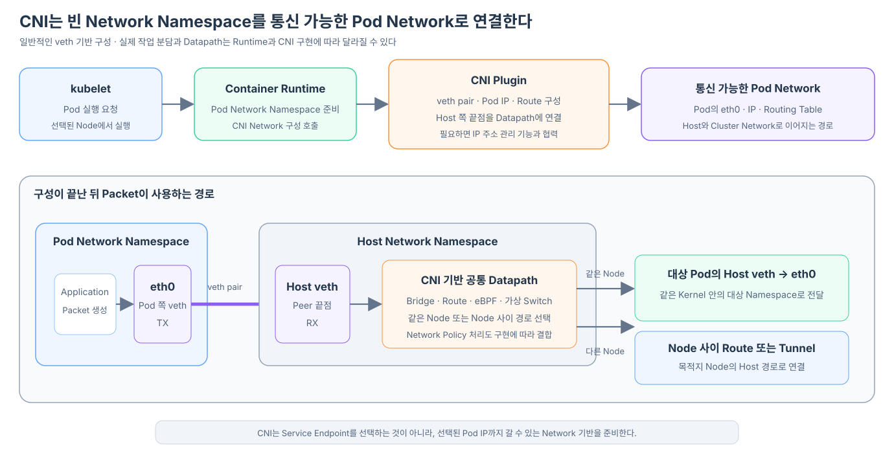

Linux의 veth pair는 한쪽 끝점의 송신을 Peer 끝점의 수신으로 전달한다. 하지만 이 기능만으로는 Kubernetes Pod가 사용할 Network가 완성되지 않는다. 누군가 veth pair를 만들고, 한쪽을 Pod의 Network Namespace로 옮기고, IP와 Route를 설정하고, Host 쪽 끝점을 Cluster의 Pod Network에 연결해야 한다.
일반적인 Kubernetes 환경에서는 Container Runtime과 CNI 기반 Network 구현이 이 준비 과정을 나누어 맡는다.

이 글은 veth를 사용하는 일반적인 CNI 구현을 기준으로 한다. ipvlan, macvlan, SR-IOV나 eBPF 기반 Datapath에서는 Interface 종류와 Packet 처리 지점이 달라질 수 있다.
Container Runtime은 Pod가 사용할 Network Namespace를 준비한다
kubelet이 Node에 배정된 Pod를 실행하도록 요청하면 Container Runtime은 Pod의 Container들이 공유할 실행 환경을 준비한다. 이 과정에서 Pod가 사용할 Network Namespace도 만들어진다.
새 Network Namespace는 처음에는 Cluster와 통신할 준비가 끝난 상태가 아니다. 자신만의 lo, Interface 목록, Routing Table과 Port 공간을 가질 수 있지만, 외부로 이어질 Interface와 Pod IP, Route가 필요하다.
kubelet
→ Container Runtime에 Pod 실행 요청
→ Pod가 공유할 Network Namespace 준비
→ Network 구성을 CNI Plugin에 요청
구현 세부에서는 Container Runtime 또는 그 Network 통합 계층이 설정된 CNI Plugin을 호출한다. Kubernetes 핵심 코드가 Calico, Flannel이나 Cilium의 구체적인 Interface 생성 방법을 직접 알고 있는 것은 아니다.
kubelet이 왜 이 과정에 등장하는지, CRI의 RunPodSandbox 요청과 CNI ADD 호출 사이에 무엇이 일어나며 kubelet이 어떤 결과를 API Server에 보고하는지는 kubelet은 Pod 실행을 어떻게 Runtime과 CNI에 맡기고 상태를 보고할까?에서 자세히 구분한다.
CNI Plugin은 Pod Namespace와 Host Network를 연결한다
veth 기반 구현을 단순화하면 CNI Plugin은 다음과 같은 작업을 수행할 수 있다.
veth pair 생성
→ 한쪽 끝점을 Pod Network Namespace로 이동
→ Pod 쪽 끝점 이름을 eth0으로 설정
→ Pod IP와 필요한 Route 설정
→ Host 쪽 끝점을 Host Network 처리에 연결
여기서 eth0은 별도의 장치 종류가 아니라 Pod 쪽 veth 끝점에 붙인 이름이다. Host 쪽 Peer는 vethXXXX, cali...처럼 CNI가 정한 이름을 사용할 수 있다.
Pod IP를 고르는 과정에는 CNI의 IP 주소 관리 기능이 함께 사용될 수 있다. 선택된 IP, Gateway와 Route가 Pod Namespace에 적용되면 Application은 일반적인 Linux Socket과 Routing Table을 사용해 Packet을 보낼 수 있다.
Host 쪽 끝점은 CNI의 공통 Datapath에 연결된다
Host 쪽 veth 끝점에서 Packet을 받았다고 해서 목적지 Pod까지 자동으로 도착하는 것은 아니다. CNI 기반 Network 구현은 Host에서 Packet이 다음 목적지로 이어질 Datapath도 준비해야 한다.
구현에 따라 다음 방식이 사용될 수 있다.
- Linux Bridge에 여러 Pod의 Host 쪽 veth를 연결한다.
- Host Routing Table에 Pod 대역이나 Pod별 Route를 구성한다.
- 가상 Switch나 eBPF Program으로 전달과 정책을 처리한다.
- 다른 Node의 Pod 대역으로 가는 Route나 Overlay Tunnel을 준비한다.
CNI는 Network 구현을 Kubernetes의 Pod 생성 과정에 연결하는 표준 경계다. 실제 Cluster 전체 경로는 CNI Plugin 호출 하나만이 아니라, 해당 Network 구현의 Node Agent나 Controller가 함께 준비할 수 있다.
같은 Node와 다른 Node는 Host 이후의 경로가 다르다
Pod에서 출발하는 첫 구간은 목적지 Node와 관계없이 비슷하다.
Pod 쪽 veth 끝점 eth0에서 TX
→ Peer인 출발 Node의 Host 쪽 veth 끝점에서 RX
목적지가 같은 Node의 Pod라면 Host 안의 Bridge, Route 또는 eBPF Datapath가 대상 Pod의 Host 쪽 veth로 전달한다.
출발 Pod eth0에서 TX
→ 출발 Host veth에서 RX
→ Node 내부 Datapath
→ 대상 Host veth에서 TX
→ 대상 Pod eth0에서 RX
목적지가 다른 Node의 Pod라면 출발 Node의 Host 경로가 Node 사이 Network로 이어진다.
출발 Pod eth0에서 TX
→ Node A의 Host veth에서 RX
→ Node A의 Route 또는 Tunnel
→ Node 사이 Network
→ Node B의 Route 또는 Tunnel
→ Node B의 대상 Host veth에서 TX
→ 대상 Pod eth0에서 RX
veth pair의 두 끝점은 같은 Linux Kernel 안에 있으므로 물리적으로 다른 Node를 하나의 pair로 직접 연결하지 않는다. Node 사이 구간은 실제 Network와 CNI 기반 Route 또는 Tunnel이 담당한다.
Pod마다 Host와 연결되는 pair를 두는 이유와 Pod끼리 직접 pair를 만드는 구조가 일반적인 Kubernetes Network에 적합하지 않은 이유는 Pod끼리는 왜 직접 veth pair로 연결하지 않고 Host Network를 경유할까?에서 더 자세히 살펴본다.
Packet은 Namespace 경계에서 TX와 RX로 관점이 바뀐다
CNI가 연결을 준비한 뒤 실제 Packet 전달은 Linux Kernel이 수행한다.
Pod Network Namespace
Route가 eth0 선택
→ Pod 쪽 veth 끝점에서 TX
veth Peer 관계
→ Host 쪽 veth 끝점에서 RX
Host Network Namespace
→ Host의 Netfilter 규칙과 Route 적용
→ 다음 Interface에서 TX
같은 Packet이 Pod Namespace에서는 로컬 Application이 만든 출력 Packet이지만, Host Namespace에서는 veth를 통해 들어온 수신 Packet이 된다. 그래서 Pod 쪽에서는 OUTPUT·POSTROUTING 경로가 관련될 수 있고, Host 쪽에서는 PREROUTING부터 처리될 수 있다.
Host veth에서 수신한 Packet이 어떤 Netfilter Hook을 지나고 kube-proxy의 Service 규칙을 만나는지는 Netfilter는 무엇이고 패킷의 어느 지점에서 동작할까?에서 이어서 살펴본다.
CNI와 Service 처리는 역할이 다르다
CNI 기반 Pod Network는 Pod가 IP를 가지고 목적지 Pod IP까지 도달할 수 있는 길을 준비한다. kube-proxy 또는 대체 Service 구현은 ClusterIP를 실제 Endpoint Pod IP로 연결하는 규칙을 준비한다.
CNI 기반 Pod Network
→ Pod IP와 목적지까지의 Network 경로 준비
kube-proxy 또는 대체 구현
→ Service IP를 Endpoint Pod IP로 연결
Service 규칙이 목적지를 실제 Pod IP로 바꾼 뒤에는 CNI가 준비한 같은 Node 또는 다른 Node의 경로가 그 Packet을 대상 Pod까지 전달한다.
Pod Network를 만든 결과는 어떻게 다른 Node의 전달 규칙에까지 반영될까? kubelet의 Pod IP 보고, EndpointSlice Controller의 갱신, 각 Node kube-proxy의 Watch와 Host 규칙 적용까지 이어지는 과정은 Pod 생성은 어떻게 각 Node의 Netfilter 규칙 갱신으로 이어질까?에서 Node B에 새 Pod가 생기는 예시로 따라간다.